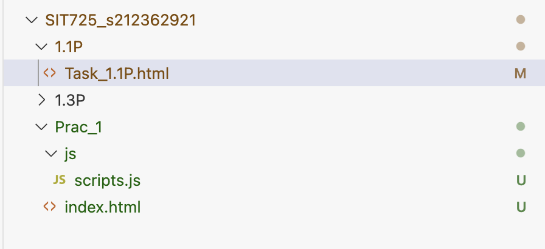
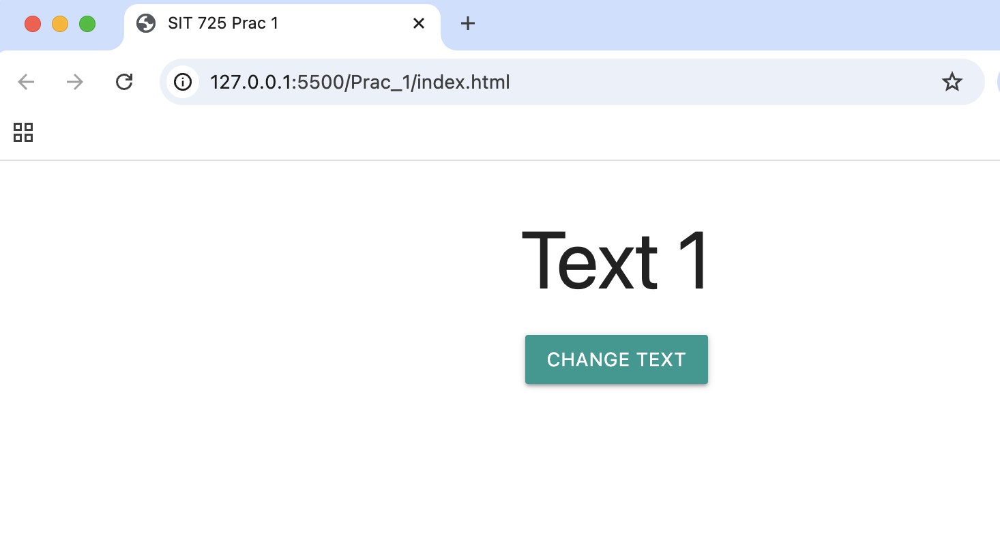
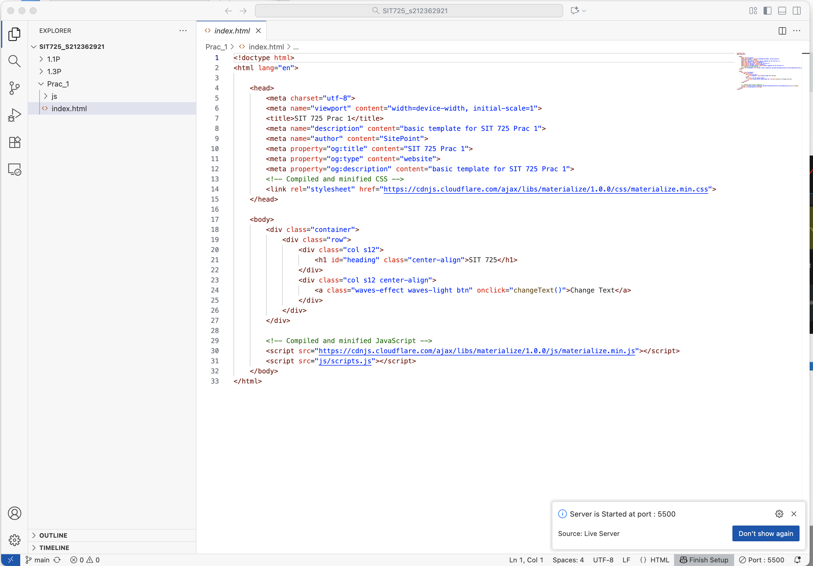
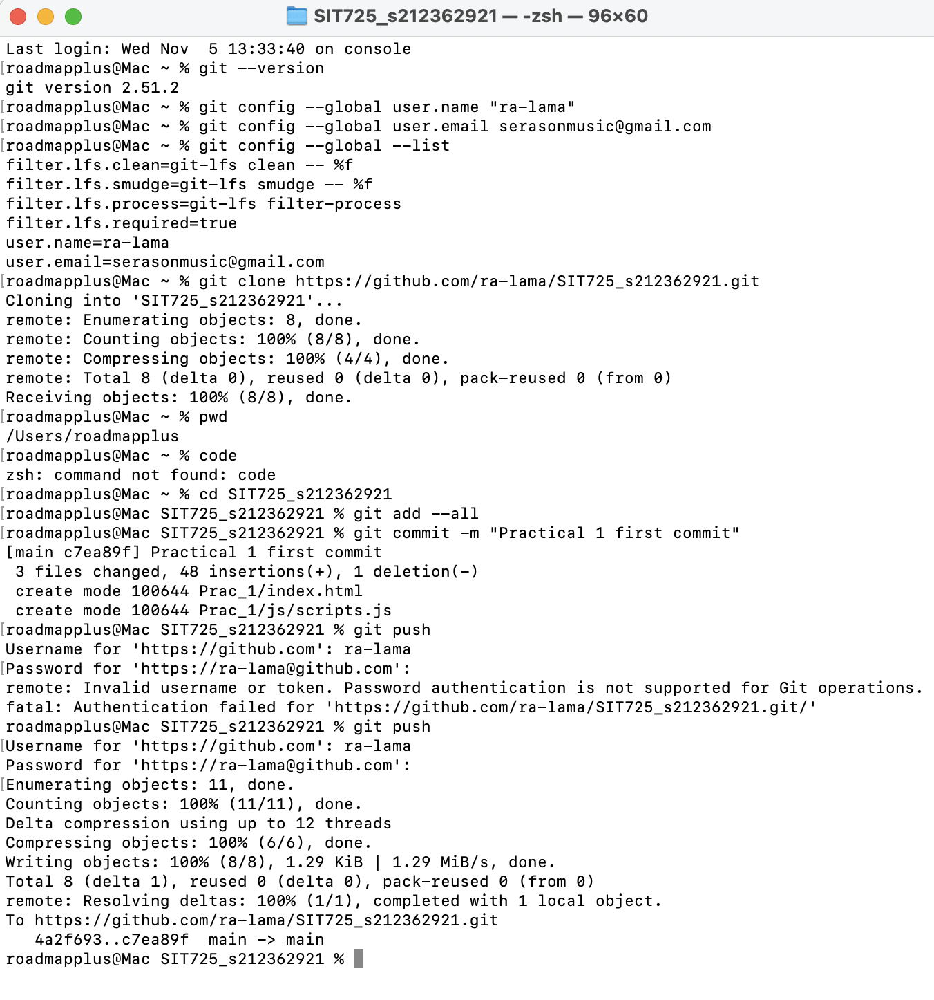
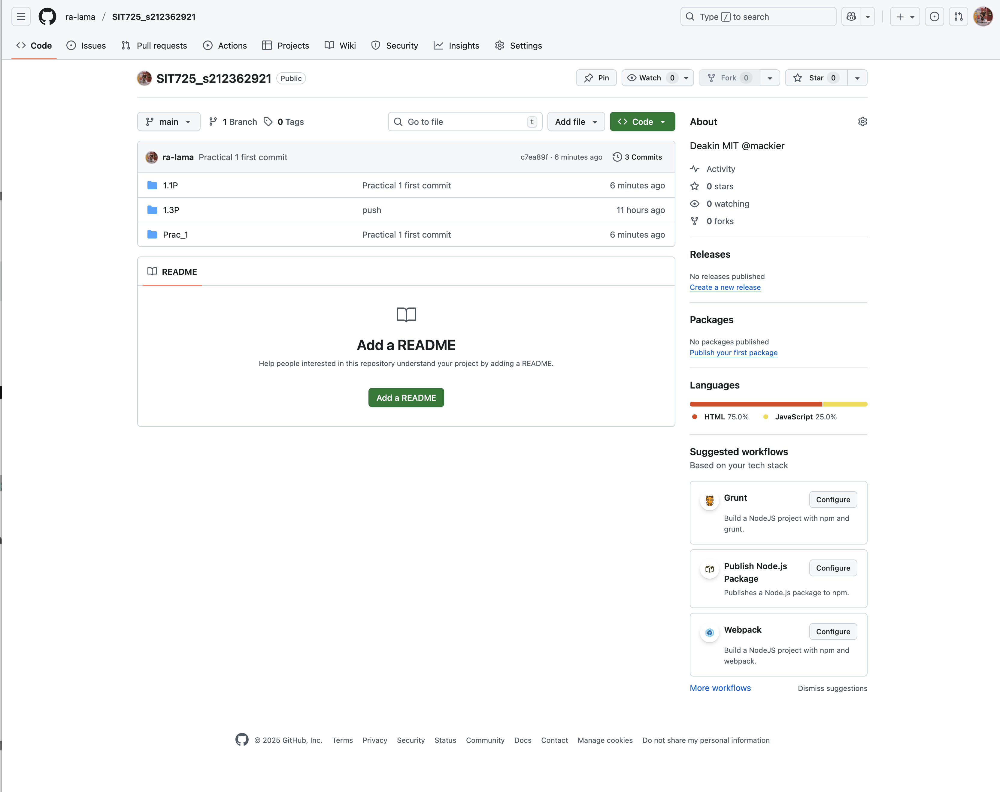
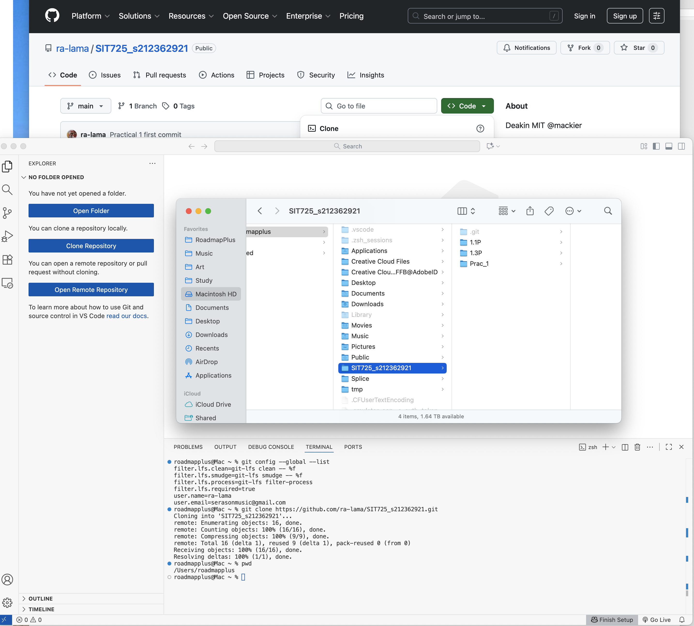

Images (click image to open in new window, large)

1. Prac1 cloned from my GitHub

2. Running the HTML and JavaScript in Live Server via VS Code

3. Live server running proof

4. Commands used

5. What GitHub looked like after push

6. Cloning to work on this, Task 1.3P